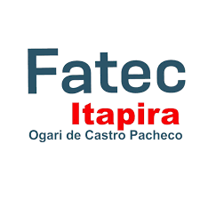
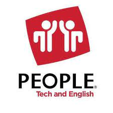
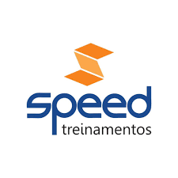

Escolaridade:
arrow_right_alt
2018 - 2020 | Técnico em Informática (Integrado ao Ensino Medio) | ETEC Itapira
arrow_right_alt
2022 - Atualmente | Tecnólogo em Desenvolvimento de Software Multiplataforma | FATEC Itapira

Cursos:
arrow_right_alt
2015 - 2018 | Curso de Informática Básico | People Itapira

arrow_right_alt
2015 - 2018 | Curso de Inglês Básico | People Itapira
arrow_right_alt
2020 - 2021 | Curso Inglês Intermediario | JET Idiomas
arrow_right_alt
2021 | Curso Gestão Empresarial | Speed Treinamentos

Outros:
arrow_right_alt